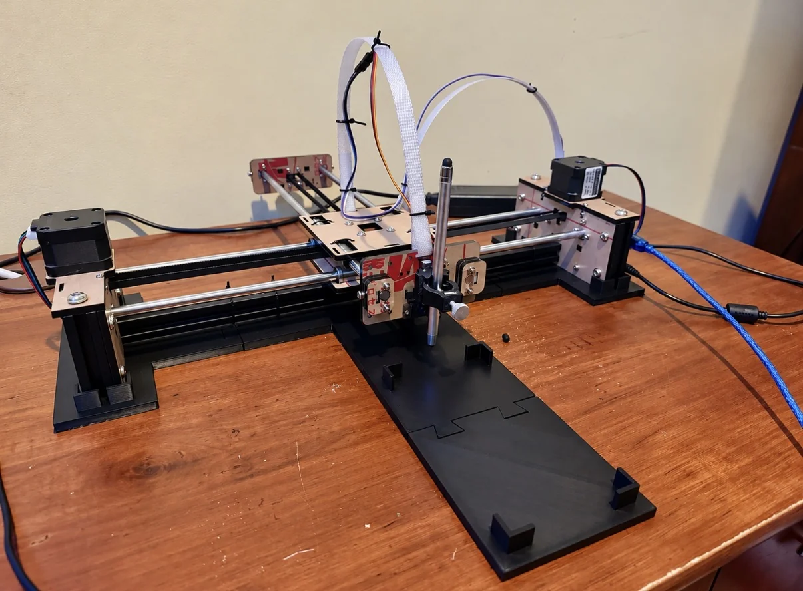
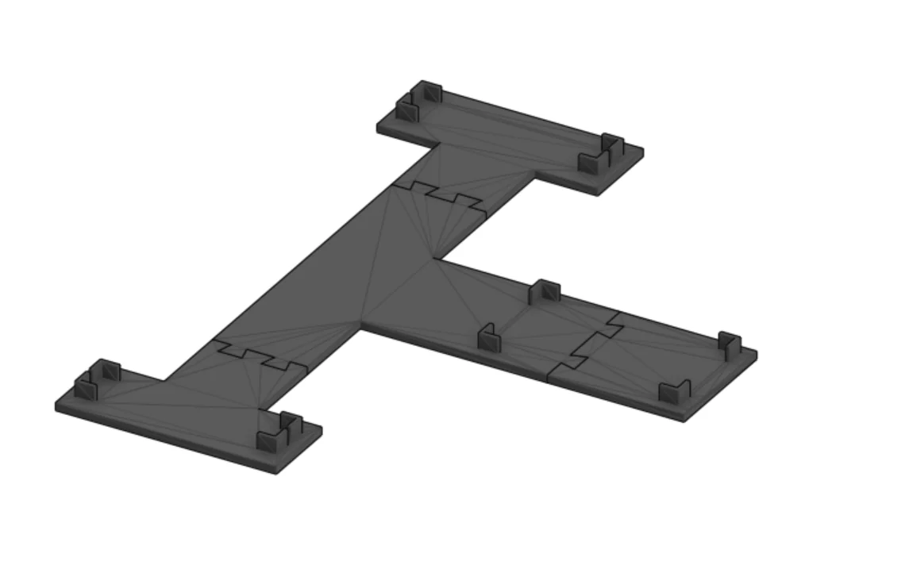
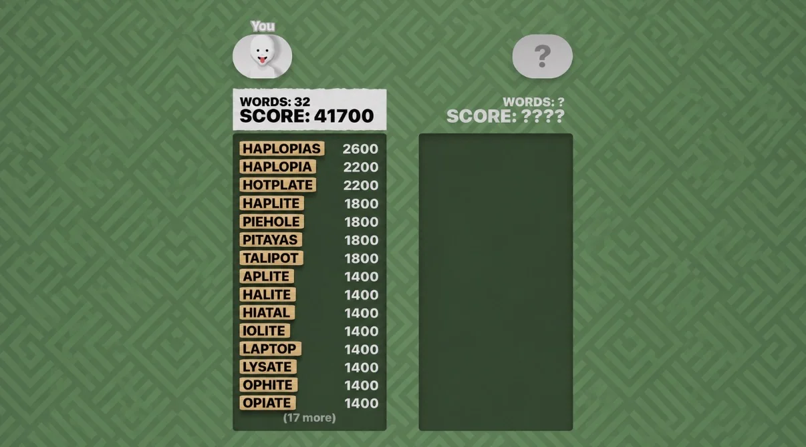

ROBOTICS / COMPUTER VISION / AUTOMATION
Word Hunt Robot
An autonomous robot that recognizes a live Word Hunt board, solves for valid words, and physically traces the solutions on a smartphone.

Overview
I designed and developed this system to connect computer vision, algorithmic problem solving, and precise physical motion. The robot reads a 4×4 Word Hunt grid from a mirrored smartphone display, determines possible words, and submits them by swiping a capacitive stylus across the screen.
How it works
- Board recognition. OpenCV and Tesseract OCR extract the letters from a live 4×4 game grid.
- Word search. A Python solver uses a dictionary of more than 129,000 candidate words and trie-based depth-first search to identify valid adjacent-letter paths.
- Motion planning. The solver maps each letter path to XY coordinates and generates motion commands for the plotter.
- Physical input. A GRBL-controlled XY mechanism positions the stylus while a servo controls contact with the touchscreen.
- Calibration. I refined movement speed, acceleration, positioning, and stylus contact to improve accuracy and repeatability.
Mechanical design
I also designed a custom, modular 3D-printed support in CAD to locate the phone beneath the plotter. The holder helps preserve grid alignment and keeps the device positioned consistently between runs.

Results
The integrated system recognizes boards, finds solutions, and executes swipes autonomously. It has submitted 45+ words per game, and I have achieved scores above 60,000 points. The example result shown below is from one completed run.
